開卷有益 ／
國中教育會考 ／ 自然 ／ 114 年114 年國中教育會考自然試題與答案
這一頁是民國 114 年國中教育會考自然的整份歷屆試題，共 50 題，題目與標準答案出自心測中心 會考歷屆試題（依著作權法 §9，考試試題不受著作權保護），其中 50 題附有詳解。以下逐題列出題幹、選項與答案；要計時作答或記錄成績，請用線上練習。
線上作答這一科 →
全部 50 題
第 1 題
孕婦產檢時常使用超聲波來檢查腹中胎兒的生長情形，當醫生使用超聲波進行檢查時，孕婦對超聲波的聽覺感受，下列說明何者最合理？
（A） 孕婦會聽見低沉的轟隆聲（B） 孕婦會聽見尖銳刺耳的聲音（C） 因頻率過高，故孕婦聽不見超聲波（D） 因波速過快，故孕婦聽不見超聲波 ※ 超聲波亦稱作超音波答案：（C）
詳解與考點 正解：題幹的「超聲波」頻率高於人耳聽覺上限。人耳可聽聲音的頻率約為20 Hz至20000 Hz，超聲波頻率高於20000 Hz，因此孕婦聽不見，C 為正解。
A：低沉的轟隆聲屬低頻可聽聲，與超聲波頻率過高不符，錯誤。
B：尖銳刺耳的聲音雖頻率較高，仍須落在人耳可聽範圍內，錯誤。
D：能否聽見主要由頻率是否落在聽覺範圍決定，不是因為波速過快，錯誤。
本題考點：人耳聽覺範圍——約20 Hz至20000 Hz；超聲波——頻率高於20000 Hz，超出人耳可聽範圍。
第 2 題
小陞想以圖(一)中的裝置或器材，測量一顆形狀不規則小石頭的密度，他應選擇哪兩項來測量？ 50mL
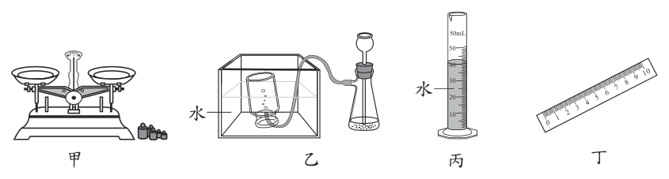
（A） 甲與丁（B） 甲與丙（C） 乙與丁（D） 乙與丙答案：（B）
詳解與考點 正解：測量不規則小石頭密度，題眼是必須同時量得質量與體積，公式為密度＝質量÷體積。甲的天平量質量；丙的量筒以排水法量體積，水位上升量即石頭體積，兩者可算出密度，故B為正解。
A：甲可量質量，但丁的直尺不能量不規則石頭的體積，錯誤。
C：乙的抽氣裝置不能量質量或不規則體積，錯誤。
D：乙與丙雖有量筒，仍缺少量質量的天平，錯誤。
本題考點：密度測量——密度＝質量÷體積；不規則固體體積——以量筒排水法量取放入前後的水位差。
第 3 題
有報導指出：「在都市觀察到麻雀的頻率有變少的趨勢，可能的原因很多，其中之一為白尾八哥的入侵。白尾八哥築巢偏好的位置與麻雀相近，食物種類也相似，甚至被觀察到會以麻雀幼鳥為食。」根據上述報導，白尾八哥與麻雀之間最符合下列哪兩種交互作用？
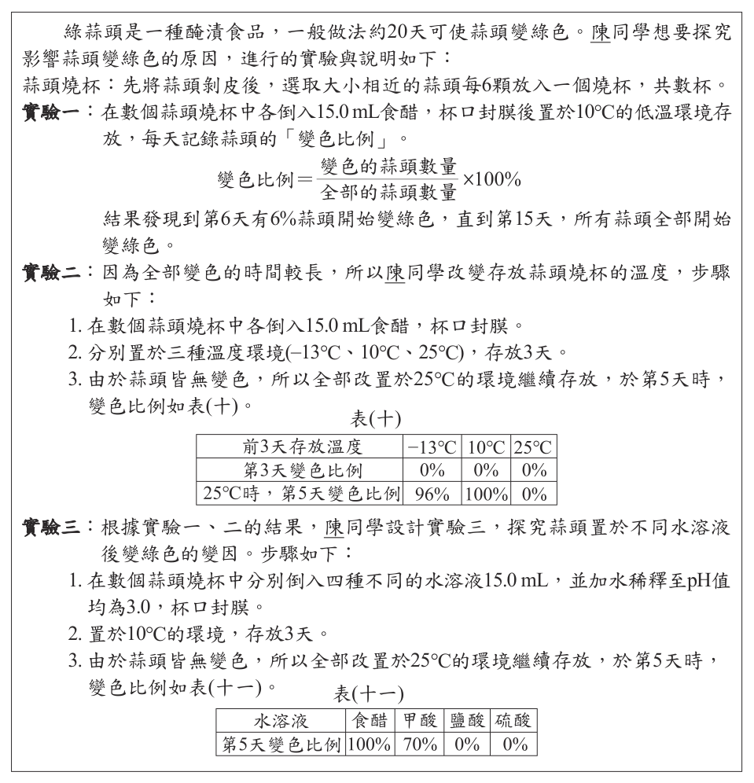
（A） 競爭、掠食（B） 競爭、共生（C） 共生、掠食（D） 寄生、掠食答案：（A）
詳解與考點 正解：題幹指出白尾八哥與麻雀的巢位偏好、食物種類相似，表示會爭奪資源；又指出白尾八哥會以麻雀幼鳥為食，表示捕食關係。因此 A 的競爭、掠食均正確。
B：兩者確有競爭，但共生是彼此互利的關係，與以幼鳥為食不符，錯誤。
C：白尾八哥捕食麻雀幼鳥並非共生，錯誤。
D：寄生者通常依附宿主取得養分，題幹是直接以幼鳥為食，屬掠食不是寄生，錯誤。
本題考點：競爭——不同生物利用相同且有限的資源時形成競爭；掠食——一方捕食另一方個體為食；共生與寄生須依雙方關係判別，不能以「有互動」概括。
第 4 題
小志將物質分成元素、化合物和混合物三類，並舉例如表(一)。表中各例子所含原子種類多寡的比較，下列何者正確？
（A） 笑氣＞硫磺（B） 硫磺＞笑氣（C） 硫磺＞花岡岩（D） 三個例子都一樣多答案：（A）
詳解與考點 正解：題幹比較的是各例子所含「原子種類」的多寡，須先判斷元素、化合物與混合物的組成。硫磺為元素 S，只含 1 種原子；笑氣為 N2O，含 N、O 共 2 種原子；花岡岩為混合物，含多種礦物，原子種類更多。因此笑氣的原子種類多於硫磺，A 為正解。
B：把笑氣與硫磺的原子種類比反；N2O 含 N、O 兩種原子，硫磺只含 S 一種原子，錯誤。
C：硫磺只含一種原子，花岡岩含多種礦物，應為花岡岩＞硫磺，錯誤。
D：三者的原子種類並不相同；它看起來對，是因為三者都可視為物質，但分類不同，組成原子種類也不同，錯誤。
本題考點：物質分類與原子種類——元素只含一種原子；化合物含兩種或以上原子且以固定比例結合；混合物由多種物質組成，原子種類通常較多。
第 5 題
圖(二)為一鋒面的剖面示意圖，黑色曲線表示鋒面，兩側分別為甲、乙空氣，箭頭為空氣沿著鋒面上升的方向，並呈現鋒面附近的雲雨分布情形。關於此鋒面兩側甲、乙空氣的性質比較，下列何者最合理？
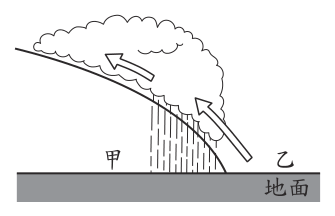
（A） 甲、乙皆為暖空氣（B） 甲、乙皆為冷空氣（C） 甲為暖空氣、乙為冷空氣（D） 甲為冷空氣、乙為暖空氣答案：（D）
詳解與考點 正解：題眼是鋒面剖面中空氣沿鋒面上升；暖空氣密度較小，會沿較冷、較重的空氣爬升並形成雲雨。圖中乙側空氣沿鋒面上升，故乙為暖空氣；甲側貼近地面、楔入其下者為冷空氣，故D為正解。
A：兩側若皆為暖空氣，不能形成此冷暖氣團交界的鋒面，錯誤。
B：兩側若皆為冷空氣，也不能形成圖示暖空氣抬升的鋒面，錯誤。
C：把甲、乙的冷暖性質寫反，錯誤。
本題考點：鋒面判讀——冷、暖氣團交界形成鋒面；空氣抬升——較輕的暖空氣沿較重的冷空氣上升，易形成雲雨。
第 6 題
臺灣地下水資源豐富，許多地區都有取用地下水，若使用不當則可能造成災害。小盈想在簡報中說明過度抽取地下水所造成的影響，則下列照片及其說明何者最適合？
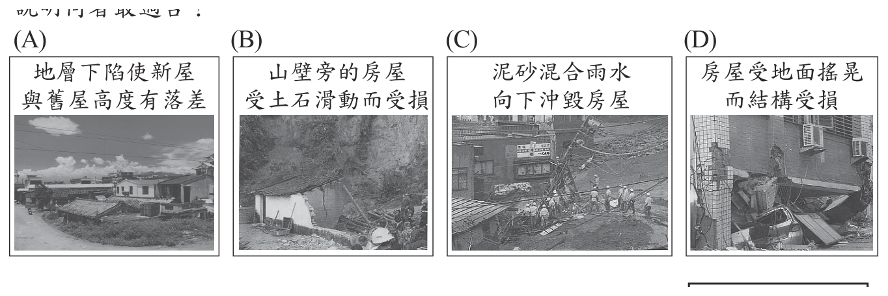
本題選項為上圖中的 A／B／C／D，請對照圖片作答。
答案：（A）
詳解與考點 正解：題眼是「過度抽取地下水」的影響；地下水被大量抽取後，地層孔隙中的支撐減少，可能造成地層下陷。A的房屋出現明顯高度落差，符合地層下陷現象，故A為正解。
B：山壁旁房屋受土石滑動影響，屬山崩或地滑，錯誤。
C：泥砂混雨水沖毀房屋，屬土石流，錯誤。
D：房屋因地面搖晃而受損，屬地震災害，錯誤。
本題考點：地下水超抽——可能使地層失去支撐而下陷；災害辨識——地層下陷與山崩、土石流、地震的成因不同。
第 7 題
端午節有「立蛋」的習俗，網路上有民眾說只有在端午節正午時，生雞蛋才可立得起來。如圖(三)，該說法的論點是「端午節時太陽直射北半球，臺灣正好在北半球，因此只有在端午節正午時，太陽對生雞蛋的引力與地球對生雞蛋的引力會恰好相反，兩力相互拉扯才使得生雞蛋能夠直立。」下列四種實驗設計及結果，何者最適合拿來反駁上述說法？
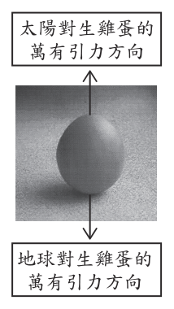
（A） 將生雞蛋煮熟後剝殼，改於聖誕節正午時在臺灣成功立蛋（B） 使用同一種的生雞蛋，改於聖誕節正午時在臺灣成功立蛋（C） 把生雞蛋換成生鴨蛋，並於端午節正午時在臺灣成功立蛋（D） 另拿不同種的生雞蛋，並於端午節正午時在臺灣成功立蛋答案：（B）
詳解與考點 正解：題幹的關鍵主張是「只有端午節正午」能立蛋，要反駁它，必須固定雞蛋種類等條件，只改變日期。B 使用同一種生雞蛋，僅把時間改為非端午的聖誕節正午；若仍成功立蛋，便直接推翻「只有端午才行」，故 B 為正解。
A：同時把蛋煮熟、剝殼又改變日期，物體本身已不同，不能判定成功立蛋是否由日期造成，錯誤。
C：雖換成生鴨蛋，仍在端午節正午進行，未改變被質疑的日期條件，無法反駁主張，錯誤。
D：雖另取不同的生雞蛋，仍在端午節正午進行，沒有測試非端午日期是否也能立蛋，錯誤。
本題考點：科學實驗的變因控制——要檢驗「只有某日期才能立蛋」，固定雞蛋種類與操作條件，只改變日期；反駁全稱限制——在非端午正午仍成功立蛋，即可否定「只有端午節正午」的說法。
第 8 題
圖(四)為某蘆筍植株的示意圖，圖中甲部位經過日光照射，呈現綠色；乙部位未受到日光照射，呈現白色。有關兩部位進行生理作用時所釋出的氣體，下列敘述何者最合理？
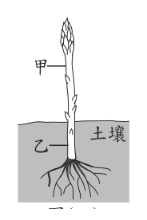
（A） 甲能釋出O2，但乙不能（B） 甲能釋出CO2，但乙不能（C） 乙能釋出O2，但甲不能（D） 乙能釋出CO2，但甲不能答案：（A）
詳解與考點 正解：題幹以受日光照射呈綠色的甲、未受照射呈白色的乙為條件，應判斷光合作用與呼吸作用。甲有葉綠體，可行光合作用釋出 O2；乙不能行光合作用，因此不能釋出 O2，故 A 為正解。
B：甲、乙都會行呼吸作用並釋出 CO2，不是乙不能釋出，故錯誤。
C：O2 來自光合作用，能釋出 O2 的是綠色且受光的甲，不是乙，故錯誤。
D：乙可因呼吸作用釋出 CO2，但甲也可釋出 CO2；它看起來對，是因為乙確實會釋出 CO2，卻忽略甲同樣進行呼吸作用，故錯誤。
本題考點：光合作用——有葉綠體且受光時可釋出 O2；呼吸作用——植株各部位皆可釋出 CO2；判準——先分辨是否具光合作用條件，再判斷氣體來源。
第 9 題
將一支未削尖的鉛筆置於桌面，鉛筆右端為軟質橡皮，左端為硬質木頭，在其兩端分別以手指施水平力，且兩力作用於同一直線上，施力後保持靜止平衡，如圖(五)。其中手指施於鉛筆左、右兩端力的大小分別為F 左、F 右，鉛筆施於左、右兩端手指的反作用力大小分別為F ′左、F ′右。已知F 左為1 N，若不考慮鉛筆與桌面間的摩擦力，則下列關係何者正確？
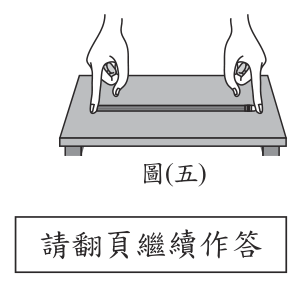
（A） F ′右＜F 右＜1 N（B） F ′右＜F 右＝1 N（C） F ′右＝F 右＜1 N（D） F ′右＝F 右＝1 N答案：（D）
詳解與考點 正解：鉛筆在無摩擦桌面上保持靜止，表示水平方向合力為0，因此左右手指施力大小相等。已知 F左=1 N，所以 F右=1 N；右手指對鉛筆的力與鉛筆對右手指的反作用力為一對作用與反作用力，大小相等，故 F′右=F右=1 N，D 為正解。
A：把 F′右 與 F右 都判成小於1 N，不符合靜力平衡及作用力、反作用力等大，錯誤。
B：F右=1 N 正確，但 F′右 應與 F右 等大，不應小於1 N，錯誤。
C：F′右=F右 正確，但兩者應皆為1 N，不應小於1 N，錯誤。
本題考點：靜力平衡——物體靜止時同一直線反向的兩力大小相等；牛頓第三運動定律——作用力與反作用力大小相等、方向相反，分別作用在不同物體上；材質軟硬會影響形變，不改變此處平衡力的大小。
第 10 題
如圖(六)，甲、乙、丙三個金屬球，甲球帶負電，乙、丙兩球帶正電，剛開始乙球距離甲球 2 m，距離丙球1 m，之後將乙球向左移動1 m，使乙球距離甲球 1 m，距離丙球 2 m。若甲、乙間的靜電力大小為 F 甲乙，乙、丙間的靜電力大小為 F乙丙，則移動前後，有關 F甲乙、F乙丙的大小變化，下列何者正確？
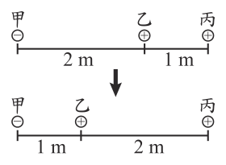
（A） F甲乙變大，F乙丙變大（B） F甲乙變大，F乙丙變小（C） F甲乙變小，F乙丙變大（D） F甲乙變小，F乙丙變小答案：（B）
詳解與考點 正解：題幹改變的是乙球到兩球的距離；在電量不變時，靜電力大小與距離平方成反比，距離愈近力愈大。甲、乙距離由2 m變為1 m，F甲乙變大；乙、丙距離由1 m變為2 m，F乙丙變小，故 B 為正解。
A：正確判斷 F甲乙 變大，卻把距離拉長的 F乙丙 也判成變大，錯誤。
C：把甲、乙距離縮短後的力判反，且把乙、丙距離拉長後的力也判反，錯誤。
D：把兩組距離改變造成的力大小變化都判反，錯誤。
本題考點：庫侖靜電力——同電量下，距離縮短則靜電力變大，距離拉長則靜電力變小；電荷正負決定吸引或排斥方向，不改變力大小隨距離變化的趨勢。
第 11 題
某電玩公司為了防止兒童誤吞遊戲主機的遊戲卡，因而在遊戲卡塗上苯甲地那銨。苯甲地那銨是非常苦的物質，其濃度只要達到______，也就是每1000 g 的溶液中含有30 mg的苯甲地那銨，便會苦到讓人難以忍受。上述空格最適合填入下列何者？
（A） 30%（B） 30 mg（C） 30 ppm（D） 30 g/cm3答案：（C）
詳解與考點 正解：題幹給每 1000 g 溶液含 30 mg 苯甲地那銨，要求判斷極低濃度單位，應換算成 ppm。1000 g=1 kg，所以 30 mg÷1000 g=30 mg÷1 kg=30 mg/kg。質量比的 1 mg/kg=1 ppm，因此濃度為 30 ppm，C 為正解。
A：30% 表示每 100 g 溶液含 30 g 溶質，遠高於每 1000 g 僅含 30 mg 的條件，錯誤。
B：30 mg 只是苯甲地那銨的質量，未表示其相對於溶液總量的濃度，錯誤。
D：30 g/cm3 是密度單位，不是濃度單位，錯誤。
本題考點：ppm 濃度——質量比中 1 mg/kg=1 ppm；單位換算——先將 1000 g 換成 1 kg，再把 30 mg/1 kg 判為 30 ppm。
第 12 題
當看到喜愛的明星時，小明站在原地大聲尖叫，而阿華則是追著明星跑。表(二)整理上述兩人行為中神經傳導的過程，其中哪一項目的敘述正確？
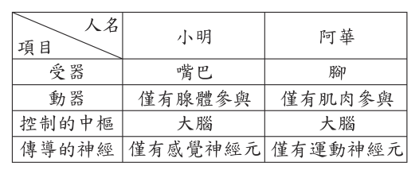
（A） 受器（B） 動器（C） 控制的中樞（D） 傳導的神經答案：（C）
詳解與考點 正解：題幹的行為是看到明星後自主尖叫或奔跑，神經傳導路徑應為受器→傳入神經→中樞→傳出神經→動器；兩人的控制中樞都應是大腦。表中 C「控制的中樞」填為大腦，符合大腦下達自主反應指令，故 C 為正解。
A：看到明星的受器應是眼睛，不是發出尖叫的嘴巴或負責跑步的腳，錯誤。
B：尖叫與奔跑的動器是肌肉；若表中僅以腺體作為動器，便不符合兩項行為，錯誤。
D：傳導神經須依路徑包含感覺與運動神經的傳遞；僅列其中一類，無法完成由看到到動作的訊息傳導，錯誤。
本題考點：神經傳導路徑——刺激先由受器接收，經傳入神經到中樞，再經傳出神經傳至動器；行為判讀——眼睛是視覺受器，肌肉是尖叫與奔跑的動器，大腦是自主反應的控制中樞。
第 13 題
房產專家建議，若可以選擇，住在臺北的居民，其陽臺面對的方向盡量不要朝向北邊、東北邊。因為冬天的時候容易下雨，且陽臺面對的方向易有強風，雨水會直接打向陽臺，容易使晾晒的衣物淋溼。專家的這個建議是否適用於其他地區？
（A） 適用於臺南，因為冬天時位處季風迎風面的臺南氣候偏溼（B） 適用於基隆，因為冬天時位處季風背風面的基隆氣候偏溼（C） 不適用於宜蘭，因為冬天時位處季風迎風面的宜蘭氣候偏乾（D） 不適用於高雄，因為冬天時位處季風背風面的高雄氣候偏乾答案：（D）
詳解與考點 正解：題幹的冬季強風與降雨來自東北季風。基隆、宜蘭及臺北位於迎風面而偏溼；高雄位於背風面而偏乾，因此臺北陽臺避北、東北的建議不適用於高雄，D 為正解。
A：臺南在冬季為季風背風面，氣候偏乾，不是迎風面偏溼，錯誤。
B：基隆是東北季風迎風面而偏溼，不是背風面，因此同樣的建議應適用，錯誤。
C：宜蘭為迎風面且偏溼，不是偏乾；它看起來對，是因為題目問「不適用」，但宜蘭的冬季條件反而與臺北相近，錯誤。
本題考點：臺灣冬季季風——盛行東北季風；迎背風面判斷——北部、東北部迎風偏溼，南部如高雄、臺南背風偏乾。
第 14 題
有三顆小球，在紅光照射下，觀察到小球分別呈現紅色、紅色、黑色，關於這三顆小球在白光照射下所呈現顏色的推論，下列何者最合理？
（A） 至少有一顆紅球（B） 至少有一顆黑球（C） 最多有兩顆白球（D） 最多有兩顆綠球答案：（C）
詳解與考點 正解：官方答案為 C；惟「最多有兩顆」若只按形式邏輯解作「數量不超過 2」，D 也會成為真敘述。依本題預定的教科書語意，「最多」是指可達到的最大可能數：紅光下呈紅色的兩球能反射紅光，在白光下可能是紅球或白球；紅光下呈黑色的第三球不反射紅光，在白光下不可能是白球。因此白球的最大可能數恰為 2，C 為正解。
A：紅光下呈紅色的兩球在白光下也可能都是白球，不能保證至少有一顆紅球。
B：紅光下呈黑色只表示該球不反射紅光；在白光下可能呈綠色、藍色或黑色，不能保證至少有一顆黑球。
D：依題目預定語意，前兩球能反射紅光，不是綠球；只有第三球可能是綠球，所以綠球可達到的最大可能數是 1，不是 2。若把「最多兩顆」僅理解為寬鬆上界，D 的文字確有歧義。
本題考點：物體呈色由照射光與物體能反射的色光共同決定；比較「最大可能數」時，要列出每顆球在白光下可能呈現的顏色。題目對「最多」採最大可達數的語意，若採純上界語意則 D 會產生歧義。
第 15 題
目前認為地球表層是由數個大小與形狀不同的板塊所組成，圖(七)為現今的板塊分布示意圖，並標出其中幾個板塊的名稱。根據上述資訊，下列說明何者最合理？
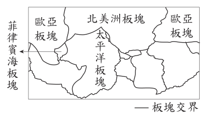
（A） 這些板塊的交界與各個大陸的海陸交界都吻合（B） 這些板塊會移動而使陸地與海底的地形也隨著改變（C） 這些板塊的交界上，皆形成了高聳巨大的陸地山脈（D） 這些板塊皆位於軟流圈之上，且交界均為中洋脊的位置答案：（B）
詳解與考點 正解：題幹指出地球表層由數個板塊組成；板塊會持續移動，張裂、聚合或錯動都會改變地殼，因此陸地與海底地形也會隨之改變。B 最合理。
A：板塊交界不等於海陸交界；圖中的太平洋板塊、北美洲板塊界線便不全沿著海岸，錯誤。
C：板塊交界類型不同，並非都形成高聳巨大的陸地山脈，錯誤。
D：板塊位於軟流圈之上可作為概略描述，但交界還有海溝、轉形斷層等，並非均為中洋脊，錯誤。
本題考點：板塊構造學說——板塊在軟流圈上方移動，會改造陸地與海底地形；板塊交界判讀——交界可為張裂、聚合或錯動，不能一概視為海岸、中洋脊或陸地山脈。
第 16 題
圖(八)是某地的地層剖面示意圖。已知該地由火山灰堆積形成的岩層約在8 百萬年前形成，岩脈約在6百萬年前形成，且該地的地層並未經過上下翻轉。根據圖中資訊，下列關於各地層形成時間之推論，何者最不合理？
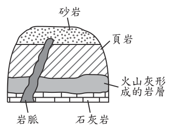
（A） 砂岩形成的時間，比頁岩形成的時間晚（B） 岩脈形成的時間，比石灰岩形成的時間晚（C） 石灰岩形成的時間，可能在7 百萬年前（D） 頁岩形成的時間，可能介於6～8百萬年前之間答案：（C）
詳解與考點 正解：題幹給出火山灰層約在8 百萬年前形成、岩脈約在6 百萬年前形成，且地層未上下翻轉；依地層疊置律，石灰岩在火山灰層下方，形成時間必早於8 百萬年前。C 說石灰岩可能在7 百萬年前形成，反而晚於上方的火山灰層，最不合理。
A：砂岩位於頁岩之上，未翻轉的沉積地層中上層較晚形成，合理。
B：岩脈切穿石灰岩，依切割律切入者較晚形成，合理。
D：頁岩位在8 百萬年前的火山灰層之上，又被6 百萬年前的岩脈切穿，形成時間可能介於6～8 百萬年前，合理。
本題考點：地層疊置律——未翻轉的沉積地層中，下層較早、上層較晚；切割律——切穿其他岩層的岩脈形成較晚；時間推論須同時符合上下位置與切割關係。
第 17 題
已知Ca和Cl的原子序分別為20、17，Ca 2 +和Cl _ 的質子數和電子數如表(三)，表中w、x、y、z的數值大小比較，下列何者正確？
（A） w＞z（B） x＞y（C） x＞z（D） y＞w答案：（A）
詳解與考點 正解：原子序等於質子數；Ca 的原子序為20，所以 w=20，Ca²⁺失去2個電子，所以 y=20−2=18。Cl 的原子序為17，所以 x=17，Cl⁻得到1個電子，所以 z=17+1=18。比較得 w=20＞z=18，故 A 為正解。
B：x=17，y=18，17＜18，不是 x＞y，錯誤。
C：x=17，z=18，17＜18，不是 x＞z，錯誤。
D：y=18，w=20，18＜20，不是 y＞w，錯誤。
本題考點：原子序與質子數——原子序即質子數，形成離子不改變質子數；離子電子數——正離子失電子、負離子得電子，先求各數值再比較大小。
第 18 題
一個質量2 kg的長方體木塊靜置於水平桌面上，若對木塊施一水平向東的外力F，其摩擦力(f)與外力(F)的關係圖如圖(九)。根據此圖判斷下列敘述何者正確？
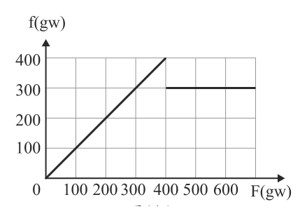
（A） 最大靜摩擦力為300 gw（B） 外力F由0增加至300 gw時，木塊即開始向東運動（C） 若外力F小於400 gw時，則外力F越小，靜摩擦力也越小（D） 若外力F大於400 gw時，則外力F越大，動摩擦力也越大答案：（C）
詳解與考點 正解：題圖顯示外力 F 在400 gw以前增加時，摩擦力 f 與 F 等量增加，亦即 f＝F，木塊仍靜止；因此 F 小於400 gw時，F 越小，靜摩擦力也越小，故 C 為正解。
A：圖中靜摩擦力的峰值是400 gw，這才是最大靜摩擦力；300 gw是木塊運動後的動摩擦力，錯誤。
B：F＝300 gw時仍小於最大靜摩擦力400 gw，靜摩擦力可平衡外力，木塊尚未向東運動，錯誤。
D：F 超過400 gw後木塊已運動，圖中動摩擦力維持300 gw，不會隨外力增大而增大，錯誤。它看起來對，是因為靜止時摩擦力會隨外力改變，但滑動後要改用動摩擦力的判準。
本題考點：靜摩擦力——物體未滑動且未達上限時，f＝F，最大靜摩擦力為400 gw；動摩擦力——物體滑動後為300 gw，在本圖條件下不隨外力大小改變。
第 19 題
為了減少溫室氣體，地質學家將二氧化碳變成岩石的一部分為了減少溫室氣體，地質學家將二氧化碳變成岩石的一部分將發電廠產生的二氧化碳灌入大量的水中，以管線將這些氣泡水輸送到數公里遠的區域，接著透過高壓將氣泡水注入地下一千公尺深的岩層中，這些氣泡水會和鈣、鎂等離子反應而「固化」，並填充岩層空隙。二氧化碳一旦固化後，就能存在岩層中。上述二氧化碳變成岩石一部分的過程，是利用下列二氧化碳(水溶液)的何種性質？
（A） 密度大於空氣（B） 溶於水呈酸性（C） 可與鈣離子反應產生難溶於水的碳酸鹽（D） 可與鈉離子反應產生易溶於水的碳酸鹽答案：（C）
詳解與考點 正解：題幹說二氧化碳水溶液和鈣、鎂離子反應後固化並填充岩層空隙，關鍵在生成難溶的碳酸鹽。CO2溶於水後形成碳酸，碳酸與鈣離子反應可生成難溶於水的碳酸鈣CaCO3，與鎂離子可生成碳酸鎂MgCO3，沉積後形成固化封存，故C為正解。
A：二氧化碳密度大於空氣與生成岩石、填充岩層空隙的反應無關，錯誤。
B：二氧化碳溶於水呈酸性只是形成碳酸的中間現象；真正使其固化的是形成難溶碳酸鹽。它看起來對，是因為題幹先把二氧化碳灌入水中，但不是最終封存的關鍵，錯誤。
D：碳酸鈉易溶於水，不能沉積固化並封存二氧化碳，錯誤。
本題考點：二氧化碳水溶液——CO2溶於水可形成碳酸；沉澱反應——碳酸根與鈣、鎂離子形成難溶碳酸鹽，利用沉積填補孔隙達成固化封存。
第 20 題
一群健康成人吃了等量的食物甲或乙後，平均血糖濃度的變化如圖(十)。已知健康成人空腹平均血糖濃度約為90 mg/dL，根據此圖推論，下列何者最合理？
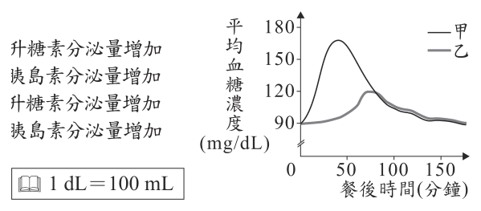
（A） 進食後，甲比乙更早導致升糖素分泌量增加（B） 進食後，甲比乙更早導致胰島素分泌量增加（C） 進食後，乙比甲更早導致升糖素分泌量增加（D） 進食後，乙比甲更早導致胰島素分泌量增加 ※ 1 dL＝100 mL答案：（B）
詳解與考點 正解：圖中進食後甲組血糖上升較早且較高，約在50 分達峰；血糖升高會刺激胰島素分泌增加以降低血糖。因此甲比乙更早引發胰島素分泌增加，B 為正解。
A：升糖素主要在血糖下降時分泌增加；甲組進食後是血糖上升，錯誤。
C：乙組進食後同樣不是先以血糖下降為特徵，不能據此判為較早增加升糖素，錯誤。
D：圖示較早升高的是甲而非乙，因此較早刺激胰島素分泌的是甲，錯誤。
本題考點：血糖恆定——血糖升高時胰島素分泌增加，以促進血糖下降；升糖素判準——血糖偏低時才促使升糖素分泌增加；讀圖時以血糖開始上升的時間判斷激素反應先後。
第 21 題
購買高濃度的酒精，可自行稀釋及分裝成消毒用酒精，但並非所有的塑膠容器都適合盛裝高濃度酒精，有些會被乙醇溶解或腐蝕而使容器變輕。下列研究將三種為熱塑性聚合物材質的容器，分別在50℃和70℃的溫度下，浸入高濃度的酒精中，容器的質量變化率如圖(十一)：圖(十一) 僅依據上述資訊，下列說明何者最合理？
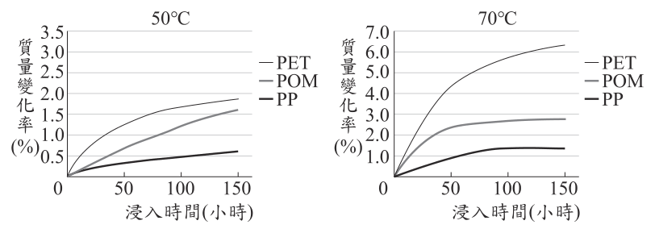
（A） 三種材質中，PET最適合盛裝高濃度酒精（B） 在兩種溫度下，PP都是最不適合盛裝高濃度酒精（C） 鏈狀聚合物的材質比網狀聚合物更適合盛裝高濃度酒精（D） 與50℃相比，三種材質皆是在70℃的條件下容器耗損率較高答案：（D）
詳解與考點 正解：題幹指出容器被乙醇溶解或腐蝕會變輕，因此應比較圖中的質量變化率。圖中 PET、POM、PP 在 70℃ 的變化率都高於 50℃；50℃ 縱軸最高約 3.5%，70℃ 約 7%，表示三種材質在 70℃ 的容器耗損率皆較高，D 為正解。
A：PET 的質量變化率最大，代表耗損最明顯，反而最不適合盛裝高濃度酒精，錯誤。
B：PP 的質量變化率最小，反而是兩種溫度下較適合的材質，不是最不適合，錯誤。
C：圖中未提供三種材質的鏈狀或網狀聚合物結構資訊，不能由質量變化率推論此種結構比較，錯誤。
本題考點：圖表判讀——先確認縱軸代表容器質量變化率，再比較同一材質在不同溫度下的高低；變因控制——圖表未提供的聚合物結構資訊，不可自行延伸推論。
第 22 題
圖(十二) 為某植物的莖部剖面示意圖。若想利用某儀器探測其蒸散作用的速率，關於實驗所需探測的圖中部位及對應理由，下列何者最合理？
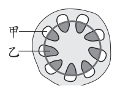
（A） 甲，因為它是運輸水分的部位（B） 甲，因為它是運輸有機養分的部位（C） 乙，因為它是運輸水分的部位（D） 乙，因為它是運輸有機養分的部位答案：（C）
詳解與考點 正解：蒸散作用的水分由根吸收後，經木質部向上運輸，最後由葉的氣孔散失。圖中乙位於維管束內側，是運輸水分的木質部，因此要探測蒸散速率應探測乙，C 為正解。
A：甲在外側，是運輸有機養分的韌皮部，不是運輸水分的部位，錯誤。
B：甲的確是韌皮部並運輸有機養分，但蒸散作用追蹤的是水分路徑，理由不合，錯誤。
D：乙是木質部，運輸的是水分而非有機養分，理由錯誤。
本題考點：莖的維管束——木質部位於內側，運輸水分；韌皮部位於外側，運輸有機養分；蒸散作用——依水分由根經木質部到葉、再由氣孔散失的路徑判定探測部位。
第 23 題
下列選項為四種在海面上的等壓線分布圖，已知各圖中涵蓋的空間範圍皆相同，數值代表該等壓線的氣壓，單位為百帕。根據等壓線上的數值推論，下列哪張圖中的甲處風速最大？
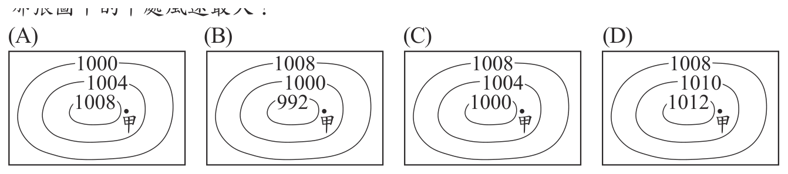
本題選項為上圖中的 A／B／C／D，請對照圖片作答。
答案：（B）
詳解與考點 正解：各圖涵蓋範圍相同，甲處風速要比較氣壓梯度。B 圖等壓線數值為1008、1000、992，相鄰線各差8百帕，等壓線最密、氣壓梯度最大，因此甲處風速最大，B 為正解。
A：相鄰等壓線相差4百帕，氣壓變化比B緩，風速較小。
C：相鄰等壓線相差4百帕，氣壓梯度小於B，風速較小。
D：相鄰等壓線相差2百帕，氣壓梯度最小，風速不會最大。
本題考點：等壓線與風速——在相同空間範圍內，等壓線越密，水平氣壓梯度力越大，風速越大；數值判讀——比較相鄰等壓線的氣壓差與間距，差大且距離近者風速較大。
第 24 題
表(四)為部分鳥類資料，推論表中所有鳥類在分類上的敘述，何者是可能的？
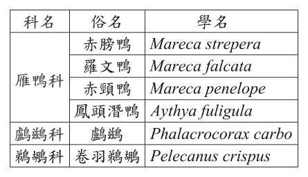
（A） 最多包含3個目、4個屬（B） 最多包含3個目、6個屬（C） 最多包含4個目、4個屬（D） 最多包含4個目、6個屬答案：（A）
詳解與考點 正解：分類階層中目＞科＞屬＞種；表中有雁鴨科、鸕鷀科、鵜鶘科共3 科，所以最多可分屬3 個目。再由學名首字判讀屬名，有 Mareca、Aythya、Phalacrocorax、Pelecanus 共4 屬，故最多包含3 個目、4 個屬，A 為正解。
B：目數3 個正確，但把同為 Mareca 的鳥類誤算成不同屬，使屬數6 個錯誤。
C：屬數4 個正確，但3 科最多只能分屬3 個目，不可能有4 個目，錯誤。
D：同時把目數判為4 個、屬數判為6 個，均不符合表中資料，錯誤。
本題考點：生物分類階層——目高於科、科高於屬，因此3 科最多歸入3 個目；學名判讀——雙名法的第一個字為屬名，相同屬名代表同屬，不能重複計數。
第 25 題
下列實驗探討鋅銅電池電極的面積大小對於電池電壓與電流的影響：實驗器材：大電極(3.0 cm×8.0 cm)：大銅片、大鋅片各兩片小電極(1.0 cm×8.0 cm)：小銅片、小鋅片各兩片除了電極面積不同，其餘實驗條件皆相同，並以三用電表檢測電壓與電流，結果如表(五)：表(五) 關於此實驗的說明，下列何者合理？
表(五) 電極 電壓(V) 電流(mA) 電功率(mW) 大銅/大鋅 0.780 2.03 1.58 小銅/大鋅 0.800 0.78 0.62 大銅/小鋅 0.818 1.68 1.37 小銅/小鋅 0.812 0.52 0.42
（A） 電極面積不同對於電功率變化的影響，負極大於正極（B） 電極面積不同對於電功率變化的影響，正極大於負極（C） 正極面積相同，負極面積不同，對於電壓值變化比例的影響大於電流值（D） 負極面積相同，正極面積不同，對於電壓值變化比例的影響大於電流值答案：（B）
詳解與考點 正解：鋅銅電池中銅為正極、鋅為負極，應比較只改變一種電極面積時的電功率。大鋅時，銅由大變小，功率由 1.58 mW 變為 0.62 mW，減少 0.96 mW；小鋅時，銅由大變小，功率由 1.37 mW 變為 0.42 mW，減少 0.95 mW。大銅時，鋅由大變小，功率由 1.58 mW 變為 1.37 mW，減少 0.21 mW；小銅時，鋅由大變小，功率由 0.62 mW 變為 0.42 mW，減少 0.20 mW。改變正極銅面積的影響較大，故 B 為正解。
A：把正、負極面積改變對電功率的影響大小顛倒，錯誤。
C：正極面積相同而改變負極時，大銅組的電壓由 0.780 V 變為 0.818 V，電流由 2.03 mA 變為 1.68 mA；小銅組的電壓由 0.800 V 變為 0.812 V，電流由 0.78 mA 變為 0.52 mA。兩組都是電流值的變化比例大於電壓值，錯誤。
D：負極面積相同而改變正極時，大鋅組的電壓由 0.780 V 變為 0.800 V，電流由 2.03 mA 變為 0.78 mA；小鋅組的電壓由 0.818 V 變為 0.812 V，電流由 1.68 mA 變為 0.52 mA。兩組仍是電流值的變化比例大於電壓值，錯誤。
本題考點：控制變因比較——固定其中一極，只改變另一極的面積，再比較電壓、電流或電功率；本表顯示面積改變主要影響電流，且正極面積對電功率的影響大於負極面積。
第 26 題
阿偉想要藉由實驗比較鋁和銅的比熱大小關係，若加熱條件相同，且忽略熱量散失，則下列四種方式，哪一種最合理？
（A） 分別加熱相同體積的鋁和銅，先開始熔化者比熱較小（B） 分別加熱相同體積的鋁和銅，溫度上升較快者比熱較小（C） 分別加熱相同質量的鋁和銅，先開始熔化者比熱較小（D） 分別加熱相同質量的鋁和銅，溫度上升較快者比熱較小答案：（D）
詳解與考點 正解：題幹要比較鋁和銅的比熱，應控制質量相同且加熱條件相同。由 Q＝mcΔT，在 Q 相同、m 相同時，c＝Q÷（mΔT），溫度上升 ΔT 較大、較快者，比熱 c 較小；因此 D 為正解。
A：相同體積的鋁與銅因密度不同，質量不同；而先熔化還受熔點影響，不能比較比熱，錯誤。
B：即使比較升溫快慢，相同體積仍未控制質量，不能直接比較比熱，錯誤。
C：質量雖相同，但先開始熔化受熔點影響，不是比熱的直接判準，錯誤。
本題考點：比熱公式——Q＝mcΔT；比較判準——在吸收熱量 Q 與質量 m 相同時，ΔT 較大者 c 較小；控制變因——不同物質應取相同質量，不可只取相同體積。
第 27 題
博物館展示一臺19世紀的骨董複式顯微鏡，如圖(十三)。小文根據博物館提供的說明，比較該顯微鏡和現代複式顯微鏡各構造的功能，何者差異最大？
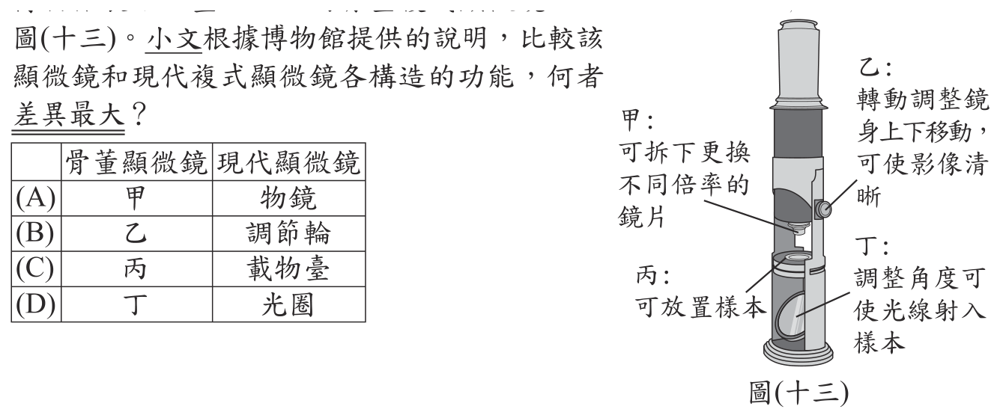
本題選項為上圖中的 A／B／C／D，請對照圖片作答。
答案：（D）
詳解與考點 正解：題幹要比較骨董與現代複式顯微鏡構造的功能差異。圖中丁是調整角度使光線射入的採光構造；骨董鏡藉調整角度反射自然光，現代顯微鏡則以光圈調節光量，且常有內建光源，功能差異最大，故 D 為正解。
A：甲是拆換倍率鏡片的物鏡，古今皆用來放大觀察樣本，功能本質相同，錯誤。
B：乙是轉動使鏡身上下對焦的調節輪，古今皆用來調整焦距，功能本質相同，錯誤。
C：丙是放置樣本的載物臺，古今皆提供樣本放置位置，功能本質相同，錯誤。
本題考點：複式顯微鏡構造——物鏡負責放大、調節輪負責對焦、載物臺放置樣本；採光構造比較——需區分骨董鏡反射自然光的設計與現代顯微鏡以光圈、光源控制照明的功能。
第 28 題
有些物質可使棕色的碘液進行還原反應，反應後溶液呈無色，例如許多水果所含有的維生素C。圖(十四)以維生素C和綠茶茶水分別進行實驗：圖(十三) 圖(十四) 僅依據本實驗結果，下列推論何者最合理？
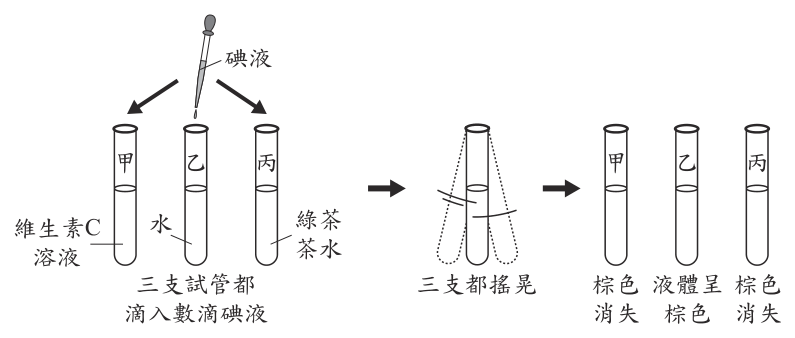
（A） 綠茶茶水中必定含有維生素C（B） 綠茶茶水中必定含有能被氧化的物質（C） 綠茶茶水進行氧化反應，維生素C進行還原反應（D） 因實驗結果溶液顏色改變，故綠茶茶水可做為酸鹼指示劑答案：（B）
詳解與考點 正解：題幹指出能使棕色碘液還原褪色的物質，自己會被氧化。圖中維生素C與綠茶茶水滴加碘液、搖晃後棕色皆消失，水的對照組仍為棕色；因此綠茶茶水必定含有能被氧化的物質，B 為正解。
A：維生素C能使碘液褪色，但能還原碘液的物質不只維生素C，不能據此斷定綠茶必含維生素C，錯誤。它看起來對，是因為維生素C是題幹舉出的例子，卻不能把一種可能原因當成唯一原因。
C：使碘液褪色的綠茶茶水是被氧化，碘液才是被還原，敘述將反應方向顛倒，錯誤。
D：本實驗呈現的是氧化還原造成的褪色，未檢驗酸鹼性，不能推論綠茶可作酸鹼指示劑，錯誤。
本題考點：氧化還原——氧化劑使其他物質氧化，自己被還原；實驗推論——碘液褪色可證明樣品含能被氧化的物質，不能直接鎖定為某一特定物質；對照組——水仍呈棕色可用來確認褪色與樣品有關。
第 29 題
甲、乙、丙三個相同的試管中，分別裝有密度不同的X、Y兩種液體，兩種液體不發生化學反應且互不相溶，所占體積及靜止平衡時的狀態如圖(十五)。若裝有液體的甲、乙、丙三試管，其總質量分別為m甲、m乙、m丙，則下列關係何者正確？
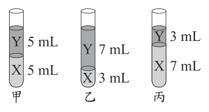
（A） m甲＝m乙＝m丙（B） m甲＞m丙＞m乙（C） m乙＞m甲＞m丙（D） m丙＞m甲＞m乙答案：（D）
詳解與考點 正解：題眼是三管的 X、Y 總體積皆為 10 mL，但 X、Y 密度不同，因此要比較重液體 X 的體積。互不相溶且靜止時，X 在下、Y 在上，所以密度 X＞Y。丙有 X 7 mL、甲有 X 5 mL、乙有 X 3 mL；丙的重液體最多，甲次之，乙最少，所以 m丙＞m甲＞m乙，故 D 為正解。
A：三管總體積相同，不代表總質量相同；各管 X、Y 的體積比例不同，錯誤。
B：把甲、乙、丙中 X 的體積多寡排序判反，錯誤。
C：同樣把重液體 X 的體積多寡排序判反，錯誤。
本題考點：密度與質量——質量＝密度×體積；互不相溶液體的分層判準——密度大者在下，總體積相同時重液體所占體積越大，總質量越大。
第 30 題
假設孔雀魚的黑眼睛及紅眼睛由一對遺傳因子所控制，遺傳因子有顯性A與隱性a兩種。將甲、乙兩隻黑眼睛孔雀魚交配，所生下的眾多子代有黑眼睛及紅眼睛兩種，其中任意選擇兩隻黑眼睛的子代標記為丙、丁，此過程如圖(十六)。在不考慮突變的情況下，推測甲、乙、丙、丁中，哪兩隻控制眼睛顏色性狀的基因型一定相同？
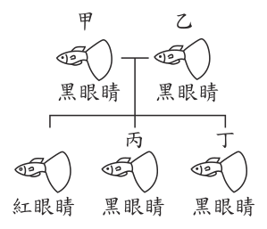
（A） 甲、乙（B） 甲、丙（C） 乙、丁（D） 丙、丁答案：（A）
詳解與考點 正解：黑眼睛親代甲、乙交配後生出紅眼睛子代，題眼是紅眼睛為隱性性狀。紅眼睛子代基因型為aa，因此甲、乙各必須提供1個a；兩者本身又是黑眼睛，不能是aa，所以甲＝Aa、乙＝Aa，甲、乙一定相同，A 為正解。
B：甲一定是Aa，但黑眼睛子代丙可能是AA或Aa，未必與甲相同。
C：乙一定是Aa，但黑眼睛子代丁可能是AA或Aa，未必與乙相同。
D：丙、丁雖同為黑眼睛，各自都可能是AA或Aa，無法確定基因型相同。它看起來對，是因為兩者表現型相同，但顯性表現型可由兩種基因型造成。
本題考點：由後代反推親代——顯性表現型親代生出隱性aa子代時，兩親代必各為Aa；顯性性狀判讀——黑眼睛可為AA或Aa，不能只由外表確定基因型。
第 31 題
圖(十七)為甲、乙兩組電流磁效應實驗，兩組實驗所用材料相同，乙組較甲組多連接一顆電池，銅線的擺放方向均為南北向。已知下列選項中磁針黑色部分為N極，則甲、乙兩組實驗中磁針的偏轉方向，哪一組最合理？圖(十六)
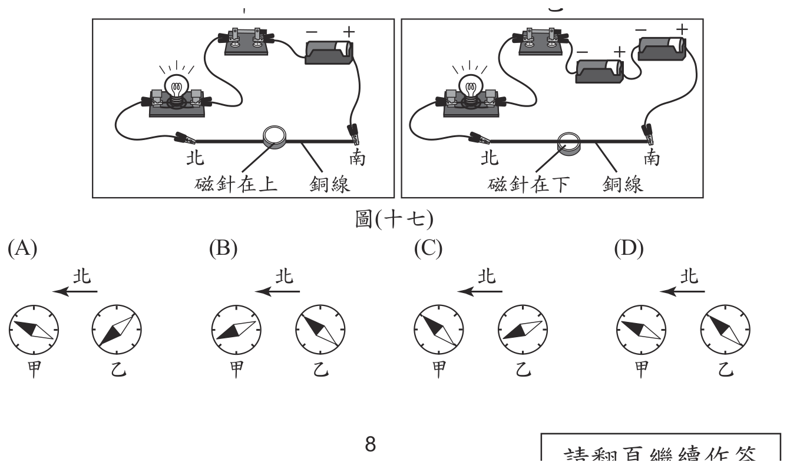
本題選項為上圖中的 A／B／C／D，請對照圖片作答。
答案：（A）
詳解與考點 正解：題幹的關鍵條件是銅線南北向、乙組多一顆電池，以及兩磁針相對導線分居上下兩側。依安培右手定則，導線兩側的磁場方向相反；乙組電流較大只會使偏轉角較大，不會改變由電流方向決定的磁場關係。比對圖示，只有 A 同時符合甲、乙偏轉方向相反及乙偏轉較明顯的關係。
B：圖示未符合磁針位於導線相反側時磁場方向相反的判準。
C：圖示未同時符合電流方向所決定的偏轉方向與乙組電流較大的效果。
D：圖示未符合兩磁針在導線上下兩側時應有相反偏轉方向的關係。
本題考點：電流磁效應——通電直導線周圍有環形磁場；安培右手定則——右手拇指指向電流方向，四指彎曲方向為磁場方向；電流大小——增加電池使電流增大，磁針偏轉角增大但不改變既定方向。
第 32 題待校
在適當的條件下，H2S和SO2會發生反應，生成H 2O和S。小如記錄某一反應裝置內反應前、反應後各物質的質量，如表(六)。下列何組數據最可能是上述反應後各物質的質量？
表(六) 物質 反應前質量(g) 反應後質量(g) H2S 70 甲 SO2 64 乙 H2O 0 丙 S 2 丁
答案：（B）
詳解與考點 考點：質量守恆。反應前後總質量不變：70+64+0+2＝136 g，且反應物 H2S、SO2 應減少，生成物 H2O、S 應增加。比對四組，只有 B（甲 2、乙 0、丙 36、丁 98，合計 136）同時符合守恆與此增減趨勢，選 B。陷阱：A、C、D 總質量不等於 136 g，或讓生成物變少、反應物不減，皆違反質量守恆。
第 33 題
如圖(十八)，地質鑽探是以鑽頭從地表垂直向下挖掘，取得岩石樣本進行分析，如果有斷層通過某處的地下，便可藉由地質鑽探了解斷層的特性。某次地震後，斷層破裂至地表，其震央與地表上斷層的位置如圖(十九)，甲、乙為斷層附近兩處可供地質鑽探使用的土地，若想進行鑽探並鑽至斷層面，下列選擇方式何者最能達到目的？
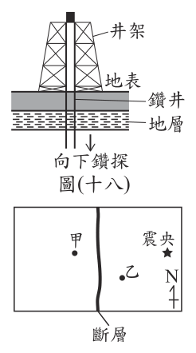
（A） 若斷層為正斷層選甲處，若斷層為逆斷層則選乙處（B） 若斷層為逆斷層選甲處，若斷層為正斷層則選乙處（C） 無論是正斷層或逆斷層，皆選擇與震央不同側的甲處（D） 無論是正斷層或逆斷層，皆選擇與震央相同側的乙處答案：（D）
詳解與考點 正解：題幹的關鍵是「從地表垂直向下」且要鑽至傾斜的斷層面；震源位在斷層面上，震央因此落在斷層面向地下傾斜延伸的一側。要讓垂直鑽孔與斷層面相交，應選與震央同側的乙處，不論正斷層或逆斷層皆然，故 D 為正解。
A：把選址和正、逆斷層類型綁定，忽略題圖判斷的核心是震央與斷層面傾向的相對位置，錯誤。
B：同樣誤以為正、逆斷層必須選不同側，錯誤。
C：甲在與震央不同側，從甲垂直向下鑽會與向震央側斜插的斷層面愈離愈遠，錯誤。它看起來對，是因為甲、乙分居破裂線兩側，但能否鑽到斷層面取決於斷層面地下延伸方向。
本題考點：斷層面判讀——地表破裂線是斷層面與地表的交線，斷層面向地下傾斜延伸；垂直鑽探選址——先以震央判斷斷層面延伸側，再在同側下鑽以與斷層面相交。
第 34 題
甲、乙兩種生物的比較如表(七)。關於甲、乙所屬的分類，圖(十八) 圖(十九) 表(七) 依序為下列何者？
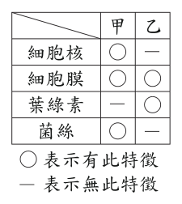
（A） 原生生物界、真菌界（B） 原生生物界、植物界（C） 真菌界、原生生物界（D） 真菌界、原核生物界答案：（D）
詳解與考點 正解：甲有細胞核、菌絲且無葉綠素，符合真菌界；乙有葉綠素能行光合作用但無細胞核，無核生物屬原核生物界，如藍綠菌。甲、乙依序為真菌界、原核生物界，D為正解。
A：甲有菌絲、無葉綠素應判真菌界而非原生生物界；且乙無細胞核，不可能是具細胞核的真菌界，錯誤。
B：甲應為真菌界，非原生生物界；乙雖有葉綠素，但無細胞核不屬植物界（植物為真核），錯誤。
C：甲判真菌界正確，但乙無細胞核應屬原核生物界；原生生物界屬真核，乙不符，錯誤。
本題考點：五界分類——有細胞核者屬真核生物，無細胞核者屬原核生物；構造判讀——有菌絲且無葉綠素可判真菌界，有葉綠素但無細胞核可判原核生物界。
第 35 題
圖(二十)為細胞進行甲、乙兩種不同分裂方式的染色體變化示意圖。若比較「以葉片繁殖出幼苗」及「以種子萌芽成幼苗」的過程中發生的分裂方式，下列敘述何者最合理？
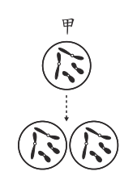
（A） 兩者皆進行甲（B） 兩者皆進行乙（C） 以葉片繁殖的進行甲，以種子萌芽的進行乙（D） 以葉片繁殖的進行乙，以種子萌芽的進行甲答案：（A）
詳解與考點 正解：題眼是比較「葉片繁殖出幼苗」與「種子萌芽成幼苗」發生的分裂方式。圖中甲分裂前後染色體數不變，為體細胞分裂；乙染色體數減半且分兩次分裂，為減數分裂。葉片繁殖靠體細胞分裂，種子在受精完成後萌芽成幼苗也靠體細胞分裂，所以兩者皆進行甲，故 A 為正解。
B：兩者都不是減數分裂；減數分裂發生在形成配子的階段，錯誤。
C：種子萌芽不是形成配子，不會進行乙，錯誤。
D：葉片繁殖也不是減數分裂，錯誤。它看起來對，是因為容易把「種子」直接聯想到生殖，但題目問的是種子萌芽階段。
本題考點：細胞分裂辨識——染色體數維持不變是體細胞分裂，減半是減數分裂；生殖階段判準——配子形成用減數分裂，個體生長與萌芽用體細胞分裂。
第 36 題
有甲、乙、丙三杯濃度相同的澱粉液，分別加入經不同條件處理的等量澱粉酶，經相同的作用時間後，以碘液與本氏液分別檢測此三杯溶液，結果如表(八)。根據此結果推測，哪杯澱粉液加入的澱粉酶應已完全失去作用？
（A） 僅甲（B） 僅乙（C） 甲和丙（D） 乙和丙答案：（A）
詳解與考點 正解：澱粉酶若已完全失去作用，澱粉不會被分解，故碘液檢測仍有澱粉應呈陽性，本氏液檢測還原糖應呈陰性。甲的結果正是碘液＋、本氏液−，所以僅甲的澱粉酶完全失去作用，故A為正解。
B：乙為碘液−、本氏液＋，表示澱粉已被分解成還原糖，澱粉酶仍有作用，錯誤。
C：丙的兩種檢測都呈陽性，表示仍有澱粉且已有還原糖，酶只部分作用，不能和甲一同判為完全失效，錯誤。
D：乙已顯示澱粉被分解，丙也顯示部分分解，兩者都不能判為完全失效，錯誤。
本題考點：澱粉與還原糖檢測——碘液陽性表示有澱粉，本氏液陽性表示有還原糖；酵素作用判讀——澱粉保留且無還原糖，才表示澱粉酶完全失去作用。
第 37 題
圖(二十一)為距離太陽最近的五顆行星其公轉軌道示意圖(未依實際距離及大小繪製)，假設這五顆行星與太陽皆位於同一平面上，有關星體的排列方式，下列敘述何者最合理？圖(二十一)
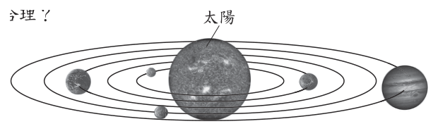
（A） 若地球、金星、水星呈一直線，地球可能位於金星與水星之間（B） 若太陽、地球、火星呈一直線，太陽可能位於地球與火星之間（C） 若金星、太陽、水星呈一直線，太陽不可能位於金星與水星之間（D） 若火星、地球、木星呈一直線，地球不可能位於火星與木星之間答案：（B）
詳解與考點 正解：題眼是五顆行星由內而外依序為水星、金星、地球、火星、木星，且太陽位於軌道中心。地球與火星可分居太陽兩側而與太陽共線，此時太陽可能在地球與火星之間，故 B 為正解。
A：地球軌道在金星與水星軌道之外，不可能位於金星與水星之間，錯誤。
C：金星與水星若分居太陽兩側而共線，太陽正可能位於兩者之間，錯誤。
D：地球軌道介於火星與木星軌道內側，地球可能位於火星與木星之間，錯誤。
本題考點：太陽系行星順序——由內而外為水星、金星、地球、火星、木星；軌道位置判準——外側軌道的行星不可能夾在兩顆內側行星之間，但不同軌道的行星可分居太陽兩側而共線。
第 38 題
在核發節能標章時須檢測不同品牌、型號的產品是否符合標準，其檢測方式也隨年代而改進。表(九)為81年至106年期間檢測某類電扇的風速時，針對電扇樣品位置條件所做的改變，關於這項改變的目的，最可能為下列何者？表(九)
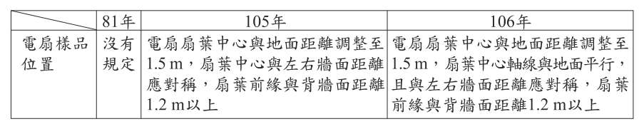
（A） 設立可觀察的對照組（B） 增加不同變因的實驗組（C） 增加電扇樣品位置的控制變因（D） 訂立電扇樣品位置的操作(縱)變因答案：（C）
詳解與考點 正解：表中由「沒有規定」逐步改為明訂扇葉離地 1.5 m、與牆面對稱、軸線與地面平行，題眼是把電扇樣品的位置固定。位置固定後，各品牌、型號能在相同條件下測風速，因此是增加電扇樣品位置的控制變因，故 C 為正解。
A：沒有另設用來比較的對照組，錯誤。
B：不是增加不同條件的實驗組，而是讓各樣品位置一致，錯誤。
D：位置並非刻意改變以觀察結果的操縱變因，而是應固定的控制變因，錯誤。
本題考點：實驗變因——操縱變因是研究者刻意改變的條件，控制變因是各組保持相同的條件；公平比較判準——檢測不同產品時，樣品位置、距離與方向都應固定。
第 39 題
一質量固定的物體在水平面上做向東的直線運動，圖(二十二)為其速度(v)與時間(t)的關係圖。若此物體在t＝2 s、t＝5 s、t＝7 s時，所受合力的大小分別為F 2、F 5、F 7，則其大小關係應為下列何者？
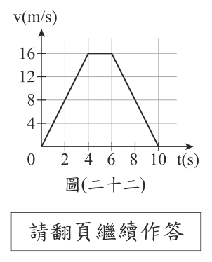
（A） F 2＜F 7＜F 5（B） F 2＞F 7＞F 5（C） F 2＝F 7＞F 5（D） F 2＝F 7＜F 5答案：（C）
詳解與考點 正解：題幹比較的是固定質量物體在各時刻所受合力，應由 v-t 圖的斜率求加速度，再用 F＝ma 判斷。0～4 s 與 6～10 s 的斜率大小相同，所以 t＝2 s 與 t＝7 s 的加速度大小相同，F2＝F7；4～6 s 為速度 16 m/s 的水平線，t＝5 s 的加速度為 0，故 F5＝0。因而 F2＝F7＞F5，C 為正解。
A：將 F5 排為最大，誤把 t＝5 s 的速度最大當成合力最大；水平段斜率為 0，故錯誤。
B：把 t＝2 s、t＝7 s 的合力大小排反；兩段斜率方向相反，但題目問大小，兩者相等，故錯誤。
D：正確判出 F2＝F7，卻將 F5 排得較大；t＝5 s 位於水平段，合力應最小，故錯誤。
本題考點：v-t 圖判讀——斜率代表加速度；牛頓第二運動定律——質量固定時，合力大小與加速度大小成正比；判準——比較合力時看斜率大小，不看速度高低。
第 40 題
在燒瓶中裝水並加熱到沸騰後，停止加熱，塞住瓶口，翻轉倒置燒瓶，使瓶內的空氣位於上方，如圖(二十三)。此時拿一袋冰塊放在燒瓶的上方，瓶內的氣壓會改變，而水會由下而上開始冒出氣泡，是一種物理變化，如圖(二十四)。根據上述說明，關於冰塊降溫造成此現象的解釋，下列何者最合理？圖(二十三) 圖(二十四)
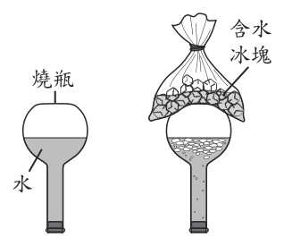
（A） 瓶內的水蒸氣凝結，接著藉由水汽化達到新的平衡（B） 瓶內的水蒸氣蒸發，接著藉由水汽化達到新的平衡（C） 瓶內的氣壓降低，接著藉由水分解反應產生氣體達到新的平衡（D） 瓶內的氣壓升高，接著藉由水分解反應產生氣體達到新的平衡答案：（A）
詳解與考點 正解：題眼是冰塊使瓶內上方降溫，且題述明示全程是物理變化。上方原有高溫水蒸氣，降溫後先凝結成液態水，氣體量減少而氣壓下降；氣壓下降使水的沸點降低，瓶內水再汽化而由下往上冒氣泡，直到達到新的氣液平衡。A 完整符合現象，故為正解。
B：水蒸氣變成液態水是凝結，不是蒸發，錯誤。
C：水分解是化學反應，與題述物理變化矛盾，錯誤。
D：降溫凝結會使氣壓降低而非升高，且水分解也不是本現象，錯誤。
本題考點：三態變化——水蒸氣遇冷凝結為液態水；氣壓與沸點——外界氣壓降低時沸點降低，液態水較易汽化；物理變化判準——沒有生成新物質。
第 41 題
圖(二十五)為一篇介紹零碳排放飛機文章中出現的燃料資訊圖，圖中顯示單位質量與單位體積的燃料燃燒所產生的能量之比較。以產生相同的能量為前提，與其他燃料比較，液化氫具有下列何種特點？
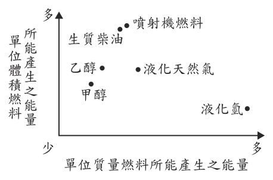
（A） 液化氫會較重，但占用的空間小（B） 液化氫會較重，且占用的空間大（C） 液化氫會較輕，且占用的空間小（D） 液化氫會較輕，但占用的空間大答案：（D）
詳解與考點 正解：題眼是「產生相同能量」，必須把圖上的單位質量與單位體積能量都換成所需燃料的質量與體積。液化氫位於橫軸最右側，表示單位質量產生能量最多，因此同能量所需質量最少、較輕；又位於縱軸偏下，表示單位體積能量較少，因此需要較大體積、占用空間大。故選 D。
A：液化氫所需質量較少，並非較重；空間也不是較小。
B：此項把質量與體積的判讀都說反。
C：較輕符合橫軸判讀，但單位體積能量較少時，不能說占用空間小。它看起來對，是因為只看見液化氫的高單位質量能量，忽略了另一軸。
本題考點：能量密度——同能量下，單位質量能量越大，所需質量越少；單位體積能量越小，所需體積越大；散布圖兩軸都要同時判讀。
第 42 題
瑞典學生拍攝影片表達節能的重要性，影片中請來奧運自行車選手踩單車發電烤吐司，最終選手踩到精疲力竭，才烤好一片吐司，如圖(二十六)，過程中發電的平均電功率約700 W，總共產生的電能約0.021 kWh。若以一度電3元計算，上述過程產生的電能，其對應的電費應如何計算？
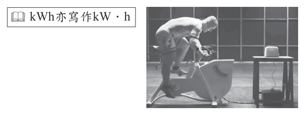
（A） (700 ÷ 1000) × 3 元（B） 0.021 × 3 元（C） (0.021 × 700 ÷ 1000) × 3 元（D） (0.021 × 1000 ÷ 700) × 3 元答案：（B）
詳解與考點 正解：題眼是已知「總共產生的電能約 0.021 kWh」與每度電 3 元；電費只以電能的度數計算。1 度電＝1 kWh，所以電費＝0.021 kWh×3 元／kWh＝0.063 元，故 B「0.021×3 元」為正解。
A：700 W 是平均電功率，不是用電度數，不能直接乘每度電價，錯誤。
C：此選項沒有可用的計算式，無法由已知電能與單價求得電費，錯誤。
D：0.021 kWh 已經是總電能，再乘 700 W 會把功率重複計入，錯誤。
本題考點：電費計算——電費＝電能（kWh）×每度電價；物理量辨識——W 是功率，kWh 是電能，計費依據是電能而非瞬時功率。
第 43 題
根據實驗結果，關於不同溫度對蒜頭變綠色的影響，下列說明何者最合理？
（A） 全程在10℃，變色的速率最快（B） 全程在25℃，變色的速率最快（C） 先低溫處理，接著改在25℃放置會減緩變色的速率（D） 先低溫處理，接著改在25℃放置會加快變色的速率答案：（D）
詳解與考點 正解：題眼是比較「全程維持同一溫度」與「先低溫再改置 25℃」兩種處理的變色速率。實驗一全程 10℃，第 6 天才有 6% 變綠、到第 15 天才全部開始變綠；表(十)中前 3 天就放 25℃（等於全程常溫）那組，到第 5 天變色比例仍是 0%；反觀前 3 天放 −13℃ 或 10℃、之後改置 25℃ 的兩組，第 5 天分別達到96% 與 100%。低溫前處理再轉常溫，把變色時程從十幾天壓縮到 5 天，故 D 為正解。
A：實驗一全程 10℃ 的結果是第 6 天才 6%、第 15 天才全部開始變綠，遠慢於先低溫再轉 25℃ 只要5 天就近乎全變，稱不上最快，錯誤。
B：表(十)中前 3 天即置於 25℃ 的組別，到第 5 天變色比例仍為 0%，全程常溫反而幾乎不變色，錯誤。
C：先低溫處理再改 25℃ 的兩組第 5 天已達 96% 與 100%，速率是明顯加快而不是減緩，方向恰好說反，錯誤。
本題考點：對照組比較與變因控制——表(十)的三組只差在「前 3 天的存放溫度」，之後條件相同，故第 5 天的差異可歸因於低溫前處理。判準有二：比同一天的變色比例（第 5 天 0% 對上 96%、100%），或比達到同一比例所需的天數（15 天對上 5 天），不能只看最後有沒有變色就論快慢。
第 44 題
僅根據實驗三的結果，推測使蒜頭變綠色的有利環境，最可能是下列何者？
（A） 酸性越弱的環境（B） 酸性越強的環境（C） 有– COOH原子團的環境（D） 沒有– COOH原子團的環境答案：（C）
詳解與考點 正解：題眼是實驗三已把四種水溶液「加水稀釋至 pH 值均為 3.0」，等於把酸性強弱設定成相同的控制變因，唯一的操作變因只剩酸的種類。表(十一)第 5 天變色比例為食醋 100%、甲酸 70%、鹽酸 0%、硫酸 0%。食醋的主成分醋酸與甲酸都含有羧基（−COOH），這兩組才使蒜頭變綠；鹽酸與硫酸不含羧基，完全沒有變色。可見有 −COOH 原子團的環境才有利於變綠，故 C 為正解。
A：四種水溶液的 pH 都被調成 3.0，酸性強弱一致，表中根本沒有「酸性較弱」的組別可供比較，推不出這個結論，錯誤。
B：同理，pH 均為 3.0 代表酸性強弱已被控制成相同，變色比例 100%、70%、0%、0% 的差異不可能來自酸性強弱，錯誤。
D：不含 −COOH 的鹽酸與硫酸變色比例都是 0%，正好說明沒有羧基時蒜頭不會變綠，此敘述與實驗結果完全相反，錯誤。
本題考點：控制變因的辨識——當所有組別的某項條件（此處為 pH 3.0）被刻意調成相同，該條件就不可能是造成結果差異的原因；剩下的操作變因（酸的種類，即分子中有無 −COOH 羧基）才是答案來源。判準：先問「各組哪裡相同、哪裡不同」，再把結果差異歸因於不同之處。
小花至醫院做「出血時間檢查」，步驟如下：
一、以針刺耳垂使其流血。
二、等30秒後以濾紙接觸耳垂。
三、每隔30秒後再次以濾紙接觸耳垂，以此類推直到出血停止。
小花檢測結果的紀錄如圖(二十七)，圖中●代表每次以濾紙接觸耳垂所得到的出血範圍。表(十二)為本項檢查的參考數值與相關判定的資料。
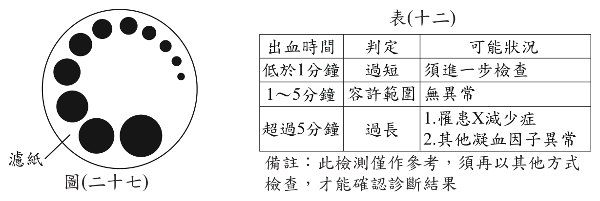
第 45 題
僅根據小花檢測的初步結果，下列推論何者最合理？
（A） 出血時間過短，須進一步檢查（B） 出血時間於容許範圍內，可能無異常（C） 出血時間於容許範圍內，但可能罹患X減少症或其他凝血因子異常（D） 出血時間過長，可能罹患X減少症或其他凝血因子異常答案：（D）
詳解與考點 正解：官方答案為 D；惟本筆輸入未附小花的檢測紀錄、X 的意義與表列容許範圍，僅憑現有題幹無法驗證「出血時間過長」及其可能原因。依官方答案所採的判讀，小花的出血時間超過容許範圍，且可能罹患 X 減少症或有其他凝血因子異常，因此選 D。
A：官方判讀為出血時間過長，不是過短，故錯誤。
B：官方判讀已超過容許範圍，不能歸為範圍內且可能無異常，故錯誤。
C：雖列出 X 減少症或其他凝血因子異常，卻把出血時間判為容許範圍內，與官方判讀不合，故錯誤。
本題考點：出血時間判讀——依檢測紀錄算出從穿刺到停止出血的時間，再與題目提供的容許範圍比較；超過上限才判為過長，並依表中資訊連結可能原因。
第 46 題
表中的X最可能為下列何者？
（A） 淋巴（B） 白血球（C） 紅血球（D） 血小板答案：（D）
詳解與考點 正解：題眼是表(十二)最後一列把「罹患 X 減少症」與「其他凝血因子異常」並列為出血時間超過5 分鐘（判定過長）的可能狀況，代表 X 是直接參與止血與凝血的血液成分。血小板在血管破損時會聚集、黏附形成血栓並釋出促凝物質，數量不足時傷口不易封閉、出血時間就會拉長，與表中把它和凝血因子並列的邏輯完全吻合，故 D 為正解。
A：淋巴是組織液滲入淋巴管後形成的液體，屬於淋巴系統的運輸液，既不是血液中的細胞成分，也不參與凝血反應，不會有「淋巴減少症使出血時間過長」的說法，錯誤。
B：白血球負責吞噬病原體與免疫防禦，數量不足主要造成抵抗力下降、容易感染，與出血時間的長短沒有直接關係，錯誤。
C：紅血球含血紅素、負責運送氧氣，數量不足造成的是貧血、缺氧與疲倦，並不影響凝血過程，更不會列在與凝血因子並列的欄位，錯誤。
本題考點：血液成分的功能對應——紅血球運送氧氣、白血球免疫防禦、血小板止血凝血、血漿運送養分與廢物。判準：題目描述的是哪一種生理功能失常（此處為出血時間過長，且與凝血因子並列），就回推負責該功能的成分；淋巴屬於淋巴系統而非血球，可先行排除。
第 47 題
阿貴在做砝碼質量為200 g的實驗時，他施一個鉛直向上的定力將彈簧秤以穩定且緩慢的速度提高10 cm，並使砝碼上升5 cm，此過程彈簧秤拉力所作的功為多少gw．cm？
（A） 1000（B） 1500（C） 2000（D） 3000答案：（B）
詳解與考點 正解：作功要使用施力大小與施力點位移。由圖（二十九）讀得砝碼質量為200 g時，彈簧秤拉力F=150 gw；題幹又給彈簧秤沿拉力方向上升10 cm。因此功=力×施力距離=150 gw×10 cm=1500 gw．cm，故B為正解。
A：1000 gw．cm是先把砝碼重200 gw除以2得到100 gw，再算100 gw×10 cm；但圖（二十九）顯示實際拉力為150 gw，不能忽略動滑輪本身重量對讀數的影響，錯誤。
C：2000 gw．cm是把砝碼全重200 gw直接當成彈簧秤拉力，再算200 gw×10 cm，未依圖讀取150 gw，錯誤。
D：3000 gw．cm是把砝碼與動滑輪的總重300 gw直接當成單一繩段的拉力，再算300 gw×10 cm，未考慮兩段繩子共同承重，錯誤。
本題考點：機械作功——先從圖表讀出彈簧秤的實際拉力，再使用彈簧秤沿力方向移動的10 cm；作功計算——功=力×施力距離，本題為150 gw×10 cm。
第 48 題
阿貴經多次重複同樣的實驗所得結果均與圖(二十九)相同，而圖中的三點連線之延長線與縱軸 F交點不是原點。若不考慮摩擦力，則關於交點不是原點的原因，下列敘述何者最合理？
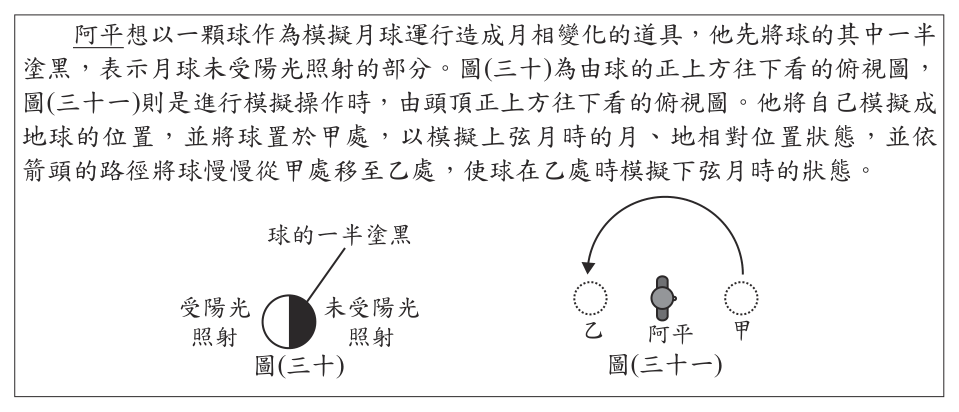
（A） 此實驗的誤差很大（B） 此實驗裝置屬於費力的簡單機械（C） 阿貴所記錄彈簧秤讀數F，其數值同時受到彈簧秤質量及砝碼質量的影響（D） 阿貴所記錄彈簧秤讀數F，其數值同時受到動滑輪質量及砝碼質量的影響答案：（D）
詳解與考點 正解：題眼是 F 與砝碼重的關係線延長後不通過原點，表示砝碼為 0 時 F 仍不為 0。動滑輪裝置中，彈簧秤除了承受砝碼重量，也要承受動滑輪的重量；因此即使沒有砝碼，仍須拉住動滑輪而有讀數，故 D 為正解。
A：多次實驗結果都相同，顯示這是固定的系統性截距，不是很大的隨機誤差，錯誤。
B：簡單機械是否費力不能解釋砝碼為 0 時仍有讀數，錯誤。
C：彈簧秤讀數的額外來源不是已歸零的彈簧秤本身，而是動滑輪重量，錯誤。
本題考點：圖線截距判讀——縱軸截距不為 0，代表自變因為 0 時仍有固定量；動滑輪受力——彈簧秤讀數須計入砝碼與動滑輪的共同重量。
第 49 題
考量月球在甲、乙兩處的月相，下列俯視圖何者最可能是阿平進行模擬時，球於兩處的亮暗面分布狀態？
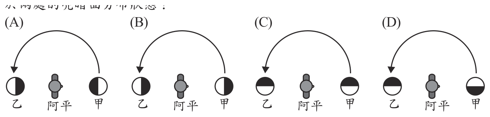
本題選項為上圖中的 A／B／C／D，請對照圖片作答。
答案：（C）
詳解與考點 正解：月相模擬的關鍵是太陽光來向固定；球代表月球時，被照亮的一半永遠朝向光源，所以俯視圖中甲、乙兩處的亮暗面分界方向應一致。比對圖示，只有 C 同時符合固定光源與甲、乙亮暗面朝向一致，C 為正解。
A：把亮暗分界畫成左右對分，未能對應固定的太陽光來向，錯誤。
B：亮暗面隨球的位置翻轉，等於讓照光方向跟著球轉動，違反光源固定的條件，錯誤。
D：甲、乙兩處的亮暗面方向不一致，不能同時由同一固定光源照射形成，錯誤。
本題考點：月相模擬——月球永遠有一半受太陽照亮；俯視圖判讀——先固定光源方向，再檢查不同位置的球其亮面是否都朝向光源。
第 50 題
根據圖(三十一)模擬的月球移動路徑，當月球由甲處移動至乙處的這段時間，地球自轉或繞太陽公轉了幾圈？
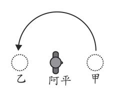
（A） 地球大約自轉了半圈（B） 地球大約自轉了15圈（C） 地球繞太陽大約公轉了半圈（D） 地球繞太陽大約公轉了15圈答案：（B）
詳解與考點 正解：題幹問月球由甲到乙所經時間內，地球轉了幾圈；月相約半個朔望月，約為 15 天，而地球約每天自轉 1 圈。先取時間：29.5÷2 約為 15 天；再算自轉圈數：15×1＝15 圈，故 B 為正解。
A：把月球約走半個週期誤當成地球只自轉半圈，錯誤。
C：15 天約為 15÷365 圈的公轉，遠不到半圈，錯誤。
D：把地球每日自轉 1 圈誤套為每日繞太陽公轉 1 圈，錯誤。
本題考點：月相週期——一個朔望月約 29.5 天，半週期約 15 天；地球運動判準——地球約每日自轉 1 圈、每年繞太陽公轉 1 圈，先辨認題目問的是自轉或公轉再估算量級。
其他年度
回到國中教育會考自然的年度總覽 ，
或到國中教育會考題庫首頁 看其他科目。
題目與標準答案出自心測中心 會考歷屆試題（依著作權法 §9，考試試題不受著作權保護）。依中華民國《著作權法》第 9 條第 1 項第 5 款，
依法令舉行之各類考試試題不得為著作權之標的，得自由利用。詳解為 AI 整理的學習輔助，
並非官方標準答案 ；中華民國會修訂，引用前請對照現行版本查證。